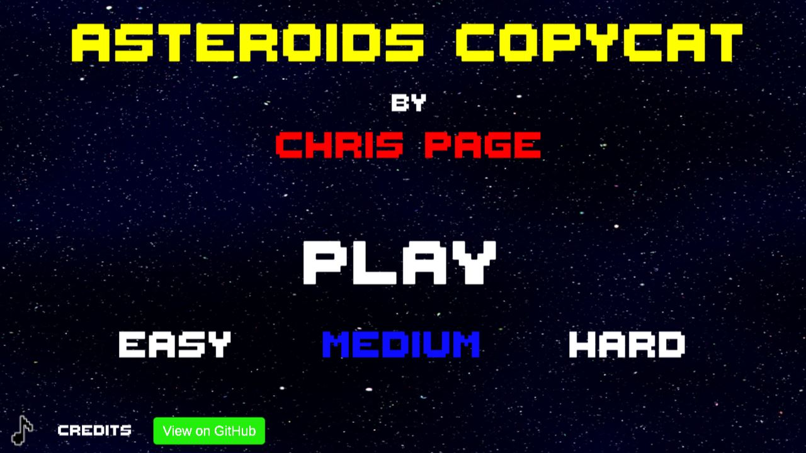

The majority of my projects satisfy a need encountered during the course of my work and as such many aren't able to be shared publicly.
However, a selection I can share is below.
Under Pressure - Ion Mobility Drift Gas Pressure Monitor
 View this project on Github
View this project on Github
This application was developed to facilitate monitoring of the drift gas pressures related to the Agilent G6560X IM-QTOF.
The previous method of monitoring and adjusting drift gas pressures was a little hit and miss. A Hyperterminal connection was made and the stream of data in the Hyperterminal window was eyeballed.
More exact measurements can be performed by taking the data offline and exporting to CSV followed by manually parsing data and creating statistics or graphs as required.
This tool was developed to offer a live view of these drift gas pressures and display them graphically and utilising colour coding.
Languages & APIs: VB.NET, Serial Port Buffer
Scope: Customers, Field Engineers, Factory Engineers
Asteroids Copycat Game
Click the image to play the game!
View this project on GithubDuring a brief period of less work due to the first COVID-19 Lockdown, I undertook and completed a Unity Game Development course on Coursera.org
The output of this course was this Asteroids Copy Cat video game based on the 70's version of the same name
Languages & APIs: C# & Unity IDE
Single Field CCS Calculator
 View this project on Github
View this project on Github
The Single Field Collisional Cross Section Calculator was developed to assist the calculation of Collisional Cross Sections from data acquired on a G6560X IM-QTOF Instrument.
Prior to this, these calculations could be performed in Excel or by using an algorithm called Ion Mobility Feature Extraction (IMFE). The Excel calculations were prone to error and the IMFE method resulted in lots of data which may not have been relevant. For quick calculations a better method was required.
Language: VB.NET
Scope: Customers & Field Engineers